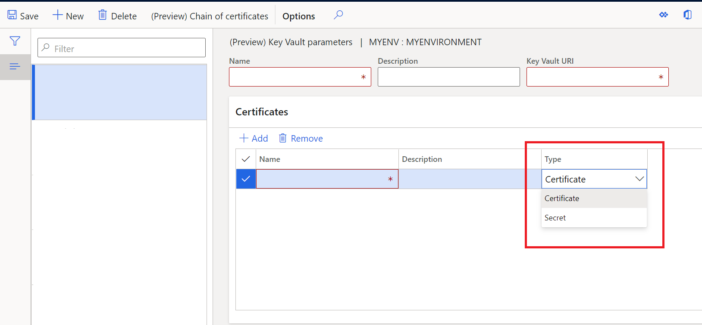
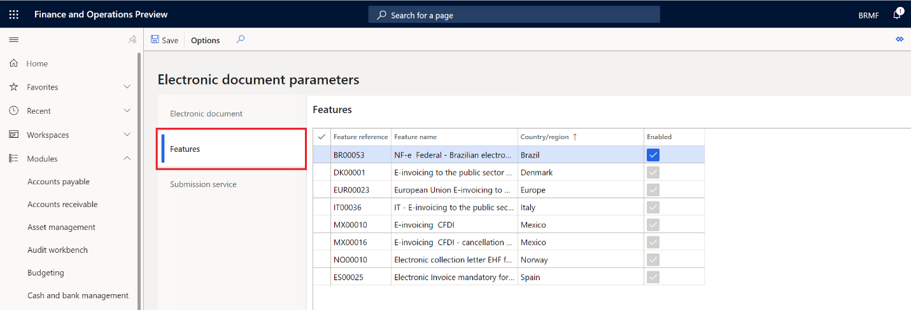
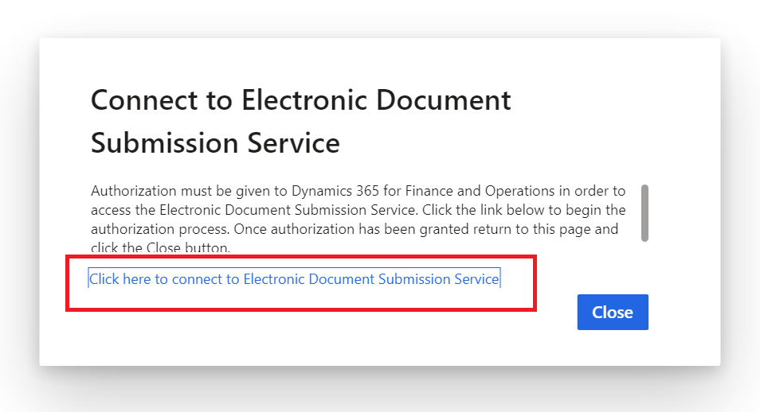

Get started with the Electronic invoicing add-on
This topic provides information that will help you get started with the Electronic invoicing add-on. First, it guides you through the configuration steps in Microsoft Dynamics Lifecycle Services (LCS), Regulatory Configuration Services (RCS), and Dynamics 365 Finance. Next, it describes the process for submitting documents through the service by using Dynamics 365 Finance or Dynamics 365 Supply Chain Management. You will also learn how to interpret the submission logs.
Availability
The Electronic invoicing add-on is initially available for several countries. The add-in supports creating electronic invoices and submitting the following business documents:
| Country/Region | Business document |
|---|---|
| Austria | Sales and Project invoices |
| Belgium | Sales and Project invoices |
| Brazil | Electronic fiscal document model 55 (NF-e) |
| Denmark | Sales and Project invoices |
| Estonia | Sales and Project invoices |
| Finland | Sales and Project invoices |
| France | Sales and Project invoices |
| Germany | Sales and Project invoices |
| Italy | Sales and Project invoices |
| Mexico | CFDI invoice |
| Netherlands | Sales and Project invoices |
| Norway | Sales and Project invoices |
| Spain | Sales and Project invoices |
| Europe | PEPPOL Sales and Project invoices |
Licensing
You can use the Electronic invoicing add-on with your current license. No additional licenses are required to use the service.
Prerequisites
Before you complete the steps in this topic, you must have the following prerequisites in place:
- Access to your LCS account.
- An LCS deployment project that includes Finance or Supply Chain Management version 10.0.13 or later.
- Access to your RCS account.
- Turn on the Globalization feature for your RCS account through the Feature management module. For more information, see Regulatory Configuration Services (RCS) - Globalization features
- Create a key vault resource and a storage account in Azure. For more information, see Create Azure Storage Account and Key Vault.
Overview
The following illustration shows the five main steps that you will complete in this topic.

- Azure resources setup: Configure Azure storage and the upload of digital certificates in Azure Key Vault.
- LCS setup: Install the add-in for microservices.
- RCS setup: Set up the environment, user access, and e-Invoicing features.
- Client setup: Set up the connection between the client and the Electronic invoicing add-on, and turn off the old features for submitting and receiving responses for electronic documents.
- Submit invoices: Submit electronic documents through the Electronic invoicing add-on, and receive responses.
Note
Some configuration steps in this topic are common and country/region-agnostic. The steps and setup procedures that are country/region-specific are described in country/region-specific topics.
LCS setup
Sign in to your LCS account.
Select the Preview feature management tile, and in the Public Preview features field group, select BusinessDocumentSubmission.
Mark the Preview feature enabled field.
Select the LCS deployment project. Before you can select the project, it must be up and running.
On the Environment add-ins FastTab, select Install a new add-in.
Select Business Document Submission.
In the Setup add-in dialog box, in the AAD application ID field, enter 091c98b0-a1c9-4b02-b62c-7753395ccabe. This value is a fixed value.
In the AAD tenant ID field, enter the ID of your Azure subscription account.

Select the check box to accept the terms and conditions.
Select Install.
RCS setup
During the RCS setup, you will complete these tasks:
- Set up the key vault in RCS.
- Set up the RCS integration with the Electronic invoicing add-on server.
- Create an Electronic invoicing add-on environment for your organization.
Set up the key vault in RCS
Sign in to your RCS account.
In the Globalization features workspace, in the Environments section, select the e-Invoicing tile.
Select Service environments.

Note
The option Connected applications grants access for the automatic configuration of the Electronic invoicing add-on in Finance or Supply Management through the RCS. However currently, this feature is still under development.
On the Action Pane, select Key Vault parameters.

On the Action Pane, select New to add a key vault.
In the Key Vault URI field, enter the DNS name attribute value of the key vault resource that you configured in Azure. For information about where to find the DNS name value, see Create Azure Storage Account and Key Vault.

On the Certificates FastTab, select Add to enter all digital certificate names and key vault secrets that are needed to establish trustable connections. In the Type column, you can specify if it is a Certificate or a Secret. Both sets of values are configured on the key vault resource in Azure.

If your country/region-specific invoice requires a chain of certificates to apply a digital signature, select Chain of certificates on the Action Pane, and then enter the sequence of certificates or key vault secrets that make up the chain.
Set up the RCS integration with the Electronic invoicing add-on server
- In the Globalization features workspace, in the Related settings section, select the Electronic reporting parameters link.
- Select Click here to connect to Lifecycle Service. If you don't want to connect to LCS, select Cancel.
- On the e-Invoicing services tab, in the Service endpoint URI field, enter the value according to the available geographies:
https://businessdocumentsubmission.us.operations365.dynamics.com/orhttps://businessdocumentsubmission.eu.operations365.dynamics.com/. - In the Application ID field, verify that it shows the ID 0cdb527f-a8d1-4bf8-9436-b352c68682b2. This value is a fixed value.
- In the LCS Environment ID field, enter the ID of your LCS subscription account.

Add an Electronic invoicing add-on environment
You can create different environments for the Electronic invoicing add-on, such as Dev, Test, or Production environments.
In the Globalization features workspace, in the Environments section, select the e-Invoicing tile.
Select New to create an environment.
In the Storage SAS token account field, enter the name of the key vault secret that you configured in the key vault in RCS.
On the Users FastTab, select New to grant access to users for this environment.
On the Action Pane, select Publish to publish the environment to the Electronic invoicing add-on server.

e-Invoicing feature setup
"The e-Invoicing feature" is the generic name for the resource that is configured and published to consume the Electronic invoicing add-on server. The setup of the e-Invoicing feature combines, among other things, the use of Electronic reporting (ER) configuration formats to create configurable export and import files, and the use of actions and action flows to enable the creation of configurable rules to send requests, import responses, and parse the response contents.
Because of variations in invoice formats and action flows, the e-Invoicing feature setup is country/region-dependent.
Set up Electronic invoicing add-on integration in Finance or Supply Chain Management
During this setup, you will complete the following tasks:
- Open flighted feature
- Turn on the Electronic invoicing add-on integration feature to enable integration with Finance.
- Set up the URL of the Electronic invoicing add-on endpoint.
- Import the ER configurations that are related to the country/region-specific e-Invoicing feature.
- Turn on the applicable country/region-specific e-Invoicing feature.
- Import the ER configurations and set up the response types that are required to update your country/region-specific invoice document as a result of the submission process.
Open flighted feature
The Electronic invoice integration feature is enabled via flighting. Flighting is a concept that allows a feature to be ON or OFF by default. The following steps enable a flight in a non-production environment.
Execute the following SQL command:
INSERT INTO SYSFLIGHTING (FLIGHTNAME, ENABLED) VALUES ('BusinessDocumentSubmissionServiceEnabled', 1)
INSERT INTO SYSFLIGHTING (FLIGHTNAME, ENABLED) VALUES ('ElectronicInvoicingServiceIntegrationFeature', 1)
After making the above change, perform an IISReset on all AOS's
Turn on the Electronic invoicing add-on integration feature
- Sign in to Finance or Supply Chain Management.
- In the Feature management workspace, search for the new feature, Configurable Electronic invoicing add-on integration. If the feature is still not shown in Feature management page, run Check for updates function
- Select the feature, and then select Enable now.
Set up the service endpoint URL
- Go to Organization administration > Setup > Electronic document parameters.
- On the Submission service tab, in the Service endpoint URL field, enter
https://businessdocumentsubmission.us.operations365.dynamics.com/. - In the Environment field, enter the name of the Electronic invoicing add-on environment that you created during RCS setup.

Import the ER configurations
To enable business data to be collected and sent to the Electronic invoicing add-on, you must import the ER data model and ER data model configuration that are related to the country/region-specific e-Invoicing feature that you want to use.
- In the Electronic reporting workspace, in the Configuration providers section, select the Microsoft tile. Make sure that this configuration provider is set to Active. For information about how to set a provider to Active, see Create configuration providers and mark them as active.
- Select Repositories.
- Select Global resource, and then select Open.
- In the Connect to Lifecycle Services dialog box, select Click here to connect to Lifecycle Service.
- Depending on the country or region where you want to use the e-Invoicing feature, you must import the applicable data model, data model mapping, and formats. For information about the ER configurations that you should import, see the country/region-specific "Get started with the Electronic invoicing add-on" topic.
- Import Customer invoice context model. This model contains additional parameters that describe, among other things, the environment in Finance that is used for the Electronic invoicing add-on during the submission of business data.
Turn on country/region-specific e-Invoicing features
To turn on country/region-specific e-Invoicing features so that they work with the Electronic invoicing add-on, you must turn on the feature in each legal entity where you want to use it. Afterward, the old electronic invoicing integration can no longer be used, and the integration with the new Electronic invoicing add-on is turned on.
- Go to Organization administration > Setup > Electronic document parameters.
- On the Features tab, in the row for the feature that is related to your country/region-specific e-Invoicing feature, select the check box in the Enabled column. For information about which feature you should turn on, see the country/region-specific "Get started with the Electronic invoicing add-on" topic.

Note
If you have multiple legal entities that are configured for different countries or regions, you can turn on the country/region-specific e-Invoicing feature for each legal entity.
Import ER configurations and set up the response types to update your country/region-specific invoice document
If the submitted invoice document requires an update after the response of the submission to the government authorization services, you must import a special ER data model and configurations to enable the status of the invoice document or any other additional field to be updated.
- In the Electronic reporting workspace, in the Configuration providers section, select the Microsoft tile.
- Select Repositories.
- Select Global resource, and then select Open.
- Import Response message model, Response message import format, Response message model mapping to destination, and File contents import format.
- Go to Organization administration > Setup > Electronic document parameters.
- On the Electronic document tab, select Add to enter the name of the table that is related to your country/region-specific invoice document. For information about which table names you should select, see the country/region-specific "Get started with the Electronic invoicing add-on" topic.
- Select Response types to configure the response types. For information about which table names you should select, see the country/region-specific "Get started with the Electronic invoicing add-on" topic.
e-Invoicing feature names by country
The following table describes other e-Invoicing features available to download from the Electronic reporting Global repository to generate electronic invoices. In RCS, you can download the e-Invoicing features listed in this table, the ER configurations, and the available e-Invoicing feature setups. In Finance, you can enable the related feature references on the Electronic document parameters page to issue electronic invoices for these countries. For more information, see the section, Turn on country/region-specific e-Invoicing features earlier in this topic.
| Feature name | Description | ER configurations | Setups | Country/Region | Feature reference |
|---|---|---|---|---|---|
| Austrian electronic invoices (AT) | Sales and Project invoices for Austria | - OIOUBL Sales invoice - OIOUBL Project invoice - OIOUBL Sales credit note - OIOUBL Project credit note |
- Sales invoice generation (AT) - Project invoice generation (AT) - Sales credit note generation (AT) - Project credit note generation (AT) |
Austria | EUR-00023 |
| Belgian electronic invoice (BE) | Sales and Project invoices for Belgium | - UBL Sales invoice BE - UBL Project invoice BE - UBL Project credit note BE - UBL Sales credit note BE |
- Sales invoice generation (BE) - Project invoice generation (BE) - Sales credit note generation (BE) - Project credit note generation (BE) |
Belgium | EUR-00023 |
| Danish electronic invoice (DK) | Sales and Project invoices for Denmark | - OIOUBL Sales invoice - OIOUBL Project invoice - OIOUBL Sales credit note - OIOUBL Project credit note |
- Sales invoice generation (DK) - Project invoice generation (DK) - Sales credit note generation (DK) - Project credit note generation (DK) |
Denmark | EUR-00023 DK-00001 |
| Dutch electronic invoice (NL) | Sales and Project invoices for Netherlands | - UBL Sales invoice NL - UBL Project invoice NL - UBL Sales credit note NL - UBL Project credit note NL |
- Sale invoice generation (NL) - Project invoice generation (NL) - Sales credit note generation (NL) - Project credit note generation (NL) |
The Netherlands | EUR-00023 |
| Estonian electronic invoice (EE) | Sales and Project invoices for Estonia | - Sales invoice (EE) - Project invoice (EE) |
- Sales invoice generation (EE) - Project invoice generation (EE) |
Estonia | EUR-00023 |
| Finnish electronic invoice (FI) | Sales and Project invoices for Finland | - Sales invoice (FI) - Project invoice generation (FI) |
- Sales invoice generation (FI) - Project invoice generation (FI) |
Finland | EUR-00023 |
| French electronic invoice (FR) | Sales and Project invoices for France | - UBL Sales invoice FR - UBL Project invoice FR - UBL Sales credit note FR - UBL Project credit note FR |
- Sales invoice generation (FR) - Project invoice generation (FR) - Sales credit note generation (FR) - Project credit note generation (FR) |
France | EUR-00023 |
| German electronic invoice (DE) | Sales and Project invoices for Germany | - Sales invoice (DE) - Project invoice |
- Sales invoice generation (DE) - Project invoice generation (DE) |
Germany | EUR-00023 |
| Norwegian electronic invoice (NO) | Sales and Project invoices for Norway | - OIOUBL Sales invoice - OIOUBL Project invoice - OIOUBL Sales credit note - OIOUBL Project credit note |
- Sales invoice generation (NO) - Project invoice generation (NO) - Sales credit note generation (NO) - Project credit note generation (NO) |
Norway | EUR-00023 NO-00010 |
| Spanish electronic invoice (ES) | Sales and Project invoices for Spain | - Sales invoice (ES) - Project invoice (ES) |
- Sales invoice generation (ES) - Project invoice generation (ES) |
Spain | EUR-00023 ES-00025 |
| Italian electronic invoice (IT) | Sales and Project invoices for Italy | - (Preview) Sales invoice (IT) - Project invoice (IT) |
- Sales invoice - Project invoice |
Italy | EUR-00023 IT-00036 |
| PEPPOL electronic invoice | PEPPOL Sales and Project invoice generation | - PEPPOL Sales invoice - PEPPOL Project invoice - PEPPOL Sales credit note - PEPPOL Project credit note |
- PEPPOL Sales invoice generation - PEPPOL Project invoice generation - PEPPOL Sales credit note generation - PEPPOL Project credit note generation |
EUR-00023 |
Electronic invoice processing in Finance and Supply Chain Management
During processing, you will complete these tasks:
- Submit a business document (invoice) through the Electronic invoicing add-on.
- View the submission execution logs.
Submit business documents
During the regular submission process, communication between the client and the Electronic invoicing add-on is bidirectional. The purpose is to accomplish two main tasks during submission of electronic documents:
- Send all electronic documents that are pending submission from Finance, and that have the correct status for submission and meet the selection criteria.
- Import, into Finance, the response that the Electronic invoicing add-on returns for previously submitted electronic documents. After import, the responses are parsed, and the status of the business documents is updated accordingly.
You can submit business documents either manually or based on your schedule requirements.
- Go to Organization administration > Periodic > Electronic documents > Submit electronic documents.
- For the first submission of any document, always set the Resubmit documents option to No. If you must resubmit a document through the service, set this option to Yes.
- On the Records to include FastTab, select Filter to open the Inquiry dialog box, where you can build a query to select documents for submission.

Filter query
In the Inquiry dialog box, on the Range tab, enter filter criteria by using the Table, Derived table, Field, and Criteria fields.
Select Add to add as many additional criteria as you require to select the business documents.
Select OK to close the Inquiry dialog box.
Select OK to submit the selected business documents to the Electronic invoicing add-on.
Note
During your first attempt to submit a document through the service, you will be prompted to confirm the connection with the Electronic invoicing add-on. Select Click here to connect to Electronic Document Submission Service.

If the connection is successful, you receive a confirmation message.

Close the dialog box.
Note
After each submission, the Action center shows the number of submitted documents.

Submission by batch
Instead of manually submitting documents, you can automate the submission process and run it in background, based on a configured frequency of batch execution.
- In the Submit electronic documents dialog box, on the Run in the background FastTab, set the Batch processing option to Yes.
- On the Recurrence tab, configure the batch processing frequency.

View all submission logs
Go to Organization administration > Periodic > Electronic documents > Electronic document submission log.
In the Document type field, select the document type to filter by.

Important
The value that is shown in the Submission status column represents the status that is related to the completion of the submission process itself. It indicates whether the flow of actions that is configured in RCS was run until the end, regardless of whether the electronic document was approved or rejected. The value in the Submission status column doesn't represent the status of the submitted document. You can view the status of the submitted document (that is, whether the document was approved or rejected) on the Processing action log FastTab in the submission log details, as described next.
On the Action Pane, select Inquiries > Submission details.
View the submission log details.

The results that are shown in the submission log depend on how the e-Invoicing feature was set up in RCS. However, regardless of the setup, the submission log always has three FastTabs:
- Processing actions – This FastTab shows the execution log for the actions that are configured in the feature version that was set up in RCS. The Status column shows whether the action was successfully run.
- Action files – This FastTab shows the intermediate files that were generated during execution of the actions. You can select View to download the file and view its contents.
- Processing action log – This FastTab shows the results of the communication between the Electronic invoicing add-on and the target web service. It also shows what was returned by the web service processing.